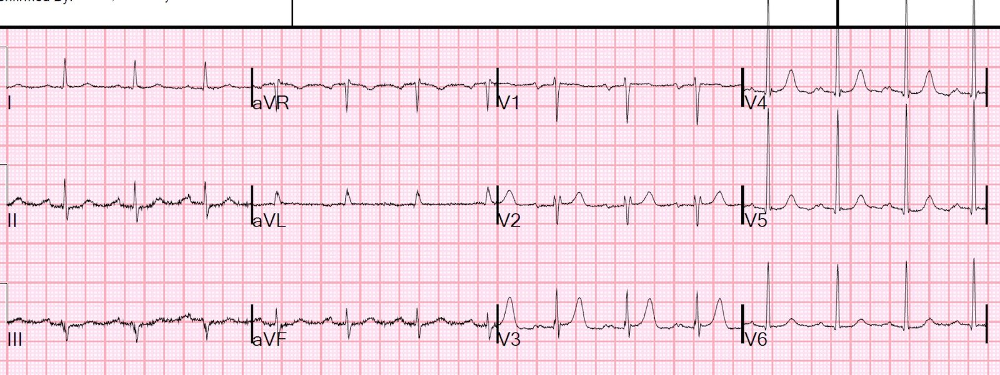
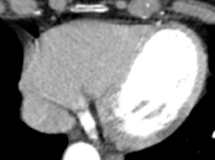
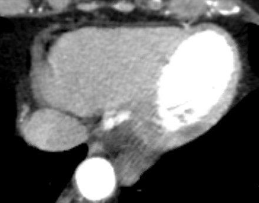
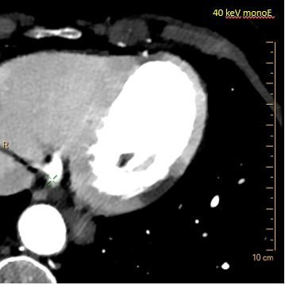
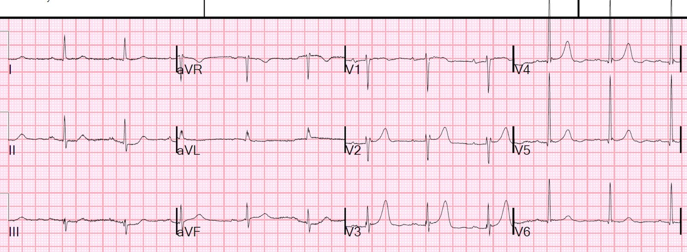
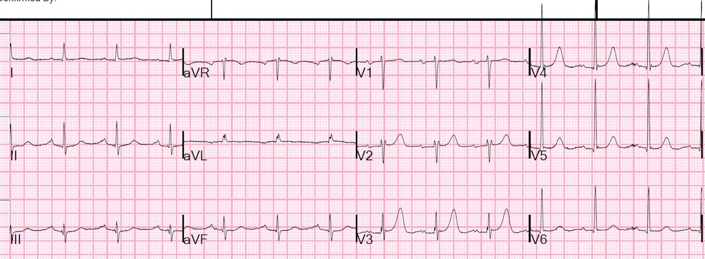
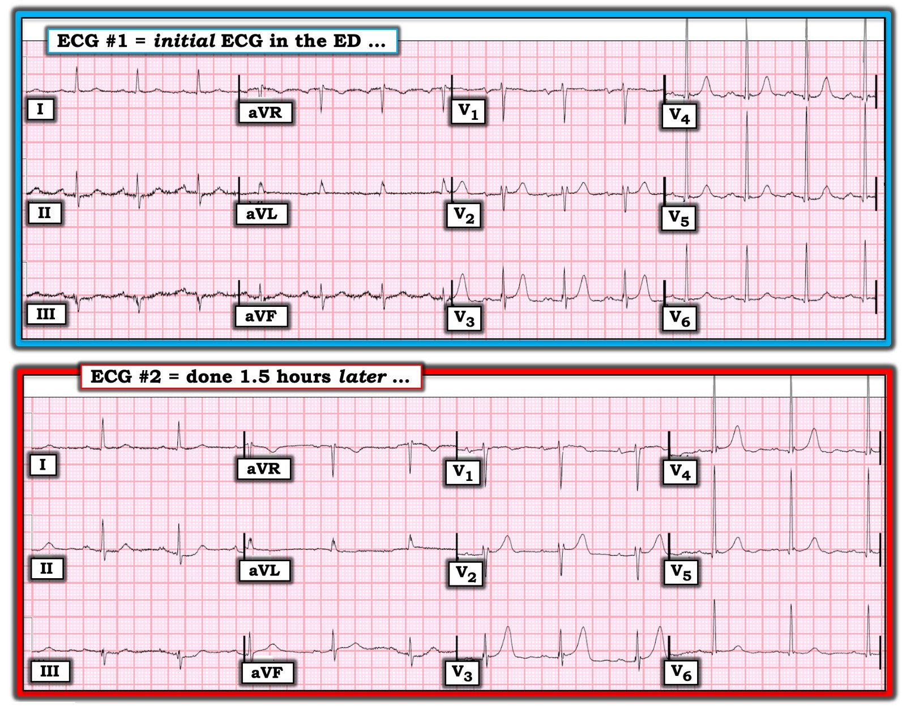
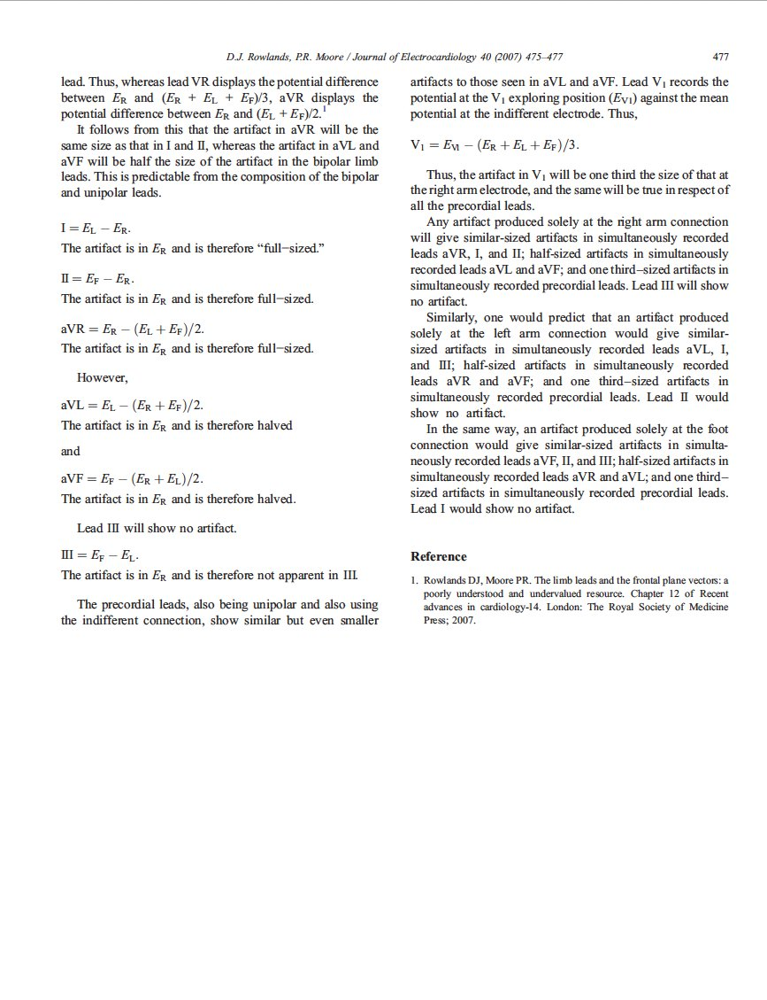

27/09/2019 — Đau ngực với điện tâm đồ không đủ chẩn đoán nhưng phim CT lại cho chẩn đoán
Bản dịch tiếng Việt của bài "Chest pain with NonDiagnostic ECG but Diagnostic CT Scan" – Dr. Smith’s ECG Blog. Giữ nguyên toàn bộ 12 hình ảnh của bản gốc.
Một phụ nữ cao tuổi đến khám vì đau ngực lan ra sau lưng trong vài giờ.
Đây là điện tâm đồ ban đầu của bà:


Troponin lần đầu trả về 0,099 ng/mL (tăng, phù hợp với nhồi máu cơ tim không do tắc - Non-Occlusion MI)
Các bác sĩ lo ngại bóc tách động mạch chủ, nên họ chỉ định chụp CT động mạch chủ ngực.
Phim này không cho thấy bóc tách nhưng cho thấy hình ảnh sau:


Một lát cắt ở mức hơi khác:


Các phim này do trưởng khoa chẩn đoán hình ảnh tuyệt vời của chúng tôi, Gopal Punjabi, đọc; ông có blog riêng về CT phổ (Spectral CT): https://www.ctspectral.com/ https://twitter.com/CtSpectral
Đây là hình ảnh khi dùng CT phổ (Spectral CT):


Với triệu chứng còn tiếp diễn, troponin tăng và không có giải thích nào khác, đây là nhồi máu cơ tim cấp với thiếu máu cục bộ đang diễn ra cho đến khi chứng minh được điều ngược lại.
Phim CT xác nhận không có giải thích nào khác và cũng xác nhận đây là thiếu máu cục bộ xuyên thành cấp, đủ để chẩn đoán OMI (nhồi máu cơ tim do tắc - Occlusion MI).
Nếu bệnh nhân không còn triệu chứng nữa, có thể kết luận rằng ổ nhồi máu đã hoàn tất, và không cần chụp mạch vành cấp cứu +/- PCI.
Các bác sĩ tim mạch không muốn đưa bệnh nhân vào phòng thông tim (cath lab).
Bà được ghi các điện tâm đồ tiếp theo:
Đầu tiên lúc 1,5 giờ:


Bản ghi này lúc 5,5 giờ:


Bà được nhập viện với truyền nitroglycerin liên tục.
Troponin của bà diễn biến như sau:
0,099 ng/mL
1,250
3,712
6,073
8,092
12,170
15,680
21,051
23,159 (đây không phải là một ổ nhồi máu nhỏ)
Siêu âm tim ngày hôm sau:
Phân suất tống máu thất trái ước tính là 60%.
Rối loạn vận động thành khu trú - thành dưới-bên
Chụp mạch vành:
Thủ phạm của NSTEMI là tắc do huyết khối ở nhánh OM1 (nhánh bờ tù thứ nhất) có khẩu kính nhỏ-trung bình. Nhánh này đã được đặt stent.

===================================
BÌNH LUẬN CỦA TÔI, bởi KEN GRAUER, MD (27/9/2019):
===================================
Như tiêu đề bài Blog này gợi ý — chẩn đoán trong ca này được xác nhận không phải bằng điện tâm đồ — mà bằng CT động mạch chủ ngực! Dù vậy — vẫn có một số Nhận xét cần được đưa ra về 2 điện tâm đồ đầu tiên trong ca này.
- Cho rõ ràng — tôi đã đặt 2 bản ghi đầu tiên này cạnh nhau trong Hình 1.


Nhận xét #1 — Ca này mô tả một tình huống có tỷ lệ mắc bệnh cao (high-prevalence) — vì bệnh nhân là một phụ nữ cao tuổi bị đau ngực mới khởi phát kéo dài vài giờ. Một khi phình bóc tách đã được loại trừ bằng CT động mạch chủ ngực — khả năng bệnh tim thiếu máu cục bộ cấp trở thành mối quan tâm hàng đầu.
- Với Bệnh sử này — sự soi xét của chúng ta để phát hiện các bất thường trên điện tâm đồ được nâng cao. Trách nhiệm thuộc về chúng ta phải chứng minh rằng các dấu hiệu điện tâm đồ đáng ngờ là không cấp tính — chứ không phải ngược lại.
Nhận xét #2 — Dù không đủ để chẩn đoán — điện tâm đồ ban đầu tại khoa cấp cứu (ED) ( = điện tâm đồ #1) không bình thường (Hình 1). Phân tích mô tả điện tâm đồ #1 cho thấy nhịp xoang @ 80-85/phút — mọi khoảng đều bình thường — có sóng q vách nhỏ ở các chuyển đạo V4-6 — và vùng chuyển tiếp (nơi sóng R trở nên cao hơn độ sâu của sóng S) xuất hiện bình thường giữa chuyển đạo V2-đến-V3. Các dấu hiệu cần lưu ý trên điện tâm đồ #1 gồm:
- Có một ít nhiễu đường nền. Vì các dao động đường nền do nhiễu lớn nhất ở các chuyển đạo II, III và aVF — chân trái nhiều khả năng nhất là nguồn gây nhiễu này. Nhiễu này không còn thấy ở 2 bản ghi tiếp theo. LƯU Ý — Dù mức độ nhiễu ở điện tâm đồ #1 là nhỏ (tức là không đủ để cản trở việc đọc chính xác bản ghi này) — biết cách xác định nhanh chi nào là nguyên nhân gây nhiễu (do run, kết nối điện cực bị lỗi/tiếp xúc da không đủ, v.v.) là hữu ích, vì điều này có thể giúp khắc phục nhanh hơn, mà điều đó có thể quan trọng khi nhiễu thực sự cản trở việc đọc. (PHẦN THƯỞNG — Bài báo 3 trang của Rowlands và Moore mà tôi đăng trong Hình 2, 3 và 4 bên dưới là phần mô tả TỐT NHẤT tôi từng thấy về cách xác định nhanh chi nào là nguồn gây Nhiễu).
- Quay lại điện tâm đồ #1 — Có lẽ đã có một kiểu đặt sai vị trí nào đó của chuyển đạo V2 (có thể do thể trạng của người phụ nữ cao tuổi này — có thể do đặt điện cực V2 quá cao trên ngực). Về mặt sinh lý, thật không hợp lý khi có hình rSr’ chỉ ở chuyển đạo V2 mà không có ở V1. Dù vậy, vì hình thái QRS gần như giống hệt nhau ở tất cả các chuyển đạo trên 3 bản ghi trình bày trong ca này — điểm kỹ thuật này không ảnh hưởng đến việc đánh giá hay xử trí trong ca này.
- Các sóng T ở chuyển đạo V2 và V3 trên điện tâm đồ #1 trông cao và nhọn không tương xứng so với biên độ sóng R ở từng chuyển đạo tương ứng. Một lý do khiến hình thái sóng T bất thường này gây chú ý với tôi — là các đoạn ST trước khi sóng T bắt đầu đi lên tương đối phẳng. Liệu hình ảnh sóng T này ở V2 và V3 của điện tâm đồ #1 là một dấu hiệu lành tính có từ lâu — hay — liệu nó có thể biểu hiện sóng T tối cấp và/hoặc thay đổi tái tưới máu ở người phụ nữ cao tuổi bị đau ngực mới khởi phát kéo dài vài giờ này, thì (theo ý kiến của tôi) không thể biết được chỉ từ việc đánh giá một điện tâm đồ duy nhất này.
- Rõ ràng có điện thế đạt tiêu chuẩn LVH trên điện tâm đồ #1 (tức là biên độ sóng R ở chuyển đạo V5 ~25mm — BẤM VÀO ĐÂY để Ôn tập các tiêu chuẩn chẩn đoán trên điện tâm đồ của LVH). Gạch đầu dòng tiếp theo cho biết vì sao việc nhận ra điện thế đạt tiêu chuẩn LVH là có liên quan trong ca này.
- Điện tâm đồ nền của bệnh nhân này cho thấy gì? Có LVH kèm bất thường tái cực ST-T (tức là kèm “tăng gánh” thất trái ?) trên điện tâm đồ nền không? NẾU có — thì có lẽ ST dẹt ở V5,V6 cùng biên độ sóng T tương đối nhỏ ở chuyển đạo V6 biểu hiện sự kết hợp của “tăng gánh” thất trái nền (tức là ST-T chênh xuống) + sóng T tối cấp, tạo ra một “hình ảnh trung gian” có thể trông không cấp tính ở các chuyển đạo ngực bên của điện tâm đồ #1.
ĐIỀU CỐT LÕI: Theo ý kiến của tôi, vào thời điểm chúng ta thấy điện tâm đồ #1 trong ca của người phụ nữ cao tuổi bị đau ngực mới khởi phát kéo dài vài giờ này — sẽ là không thể loại trừ các thay đổi cấp tính chỉ dựa trên một điện tâm đồ ban đầu duy nhất này.
- Tìm được một điện tâm đồ cũ của bệnh nhân này có thể vô cùng quý giá! Nếu không — sẽ cần thêm thông tin (tức là các điện tâm đồ liên tiếp, troponin, siêu âm tim, v.v.) trước khi chúng ta có thể biết liệu các dấu hiệu tôi mô tả ở trên có phải là cấp tính hay không …
Nhận xét #3 — So với điện tâm đồ #1 — điện tâm đồ thứ 2 (ghi sau đó 1,5 giờ) trong ca này ( = điện tâm đồ #2) — quả thật cho thấy một thay đổi cần được ghi nhận và có thể có ý nghĩa (Hình 1).
- Chẳng phải biên độ sóng T ở cả hai chuyển đạo V2 và V3 của điện tâm đồ #2 đều cao hơn một cách tương xứng so với ở điện tâm đồ #1, khi so với biên độ sóng R ở từng chuyển đạo tương ứng sao? Nghĩa là — sóng T ở chuyển đạo V2 của điện tâm đồ #2 cao 5 mm, trong khi ở điện tâm đồ #1 chỉ cao 3 mm. Ở chuyển đạo V3 — sóng T trên điện tâm đồ #2 rõ ràng cao hơn sóng R ở chuyển đạo này — trong khi ở điện tâm đồ #1 — sóng T ở V3 rõ ràng không cao bằng sóng R ở chuyển đạo này. ĐIỀU CỐT LÕI: Từ việc so sánh điện tâm đồ #1 với điện tâm đồ #2 — tôi không biết làm sao loại trừ khả năng sóng T ở V2 và V3 đã trở nên tối cấp hơn trên điện tâm đồ #2.
KẾT LUẬN của Ca bệnh này: Điện tâm đồ thứ 3 (ghi lúc 5,5 giờ) không cho thấy thay đổi đáng kể so với điện tâm đồ #2 — vì vậy tại thời điểm này, đã trở nên rõ ràng rằng các điện tâm đồ liên tiếp của bệnh nhân này không tiến triển cấp tính. Và, như Dr. Smith đã trình bày chi tiết — troponin liên tiếp đã dương tính rõ rệt — CT động mạch chủ ngực cho thấy bất thường ngấm thuốc cản quang khu trú — và siêu âm tim ngày hôm sau xác nhận bất thường vận động thành khu trú. Do đó — các dấu hiệu điện tâm đồ tôi chỉ ra ở trên là không cần thiết để chẩn đoán trong ca này. Dù vậy, nhằm tối ưu hóa khả năng đọc điện tâm đồ:
- Xin hãy xem lại các bản ghi trong Hình 1 nếu ban đầu bạn chưa nhận ra các dấu hiệu tôi mô tả ở trên. Dù trong ca này hóa ra các điện tâm đồ liên tiếp không tiến triển — điều đó không thể biết được nếu chỉ đánh giá 2 điện tâm đồ đầu tiên!
- Hãy nhớ rằng việc tìm được một điện tâm đồ cũ của bệnh nhân đôi khi có thể vô cùng quý giá! Ước gì có sẵn một điện tâm đồ cũ của bệnh nhân này! NẾU có sẵn một điện tâm đồ cũ — có thể việc nhận ra một biến cố tim cấp đã có thể thực hiện được sớm hơn nhiều (tức là sớm ngay từ lúc điện tâm đồ #1 được ghi)!
- Như có thể thấy rõ từ những đối chiếu lâm sàng độc đáo thường xuyên được cung cấp trên Dr. Smith’s ECG Blog — cách TỐT NHẤT để tiếp tục mài giũa kỹ năng đọc điện tâm đồ của bạn — là QUAY LẠI và xem lại các bản ghi trong từng ca sau khi chẩn đoán xác định được công bố. Trong ca cụ thể này, điểm giảng dạy quan trọng nhất với tôi — là nhận thức rằng chúng ta không thể chắc chắn các dấu hiệu tôi mô tả ở trên cho điện tâm đồ #1 là không cấp tính chỉ dựa trên một điện tâm đồ ban đầu duy nhất này. Phải đến tận khi thời gian đã trôi qua và có được điện tâm đồ thứ 3 ghi lúc 5,5 giờ, việc các điện tâm đồ liên tiếp không tiến triển mới trở nên rõ ràng …
Chúng tôi xin CẢM ƠN Dr. Smith vì ca bệnh minh họa này!

PHẦN THƯỞNG — 3 Hình dưới đây in lại bài báo của Rowlands và Moore về cách xác định nguồn gây nhiễu khi chỉ một chuyển đạo chi là nguyên nhân.
- Biết chi nào gây lỗi là hữu ích để khắc phục nhanh hơn (tức là do kết nối điện cực bị lỗi/tiếp xúc da không đủ, v.v.).


